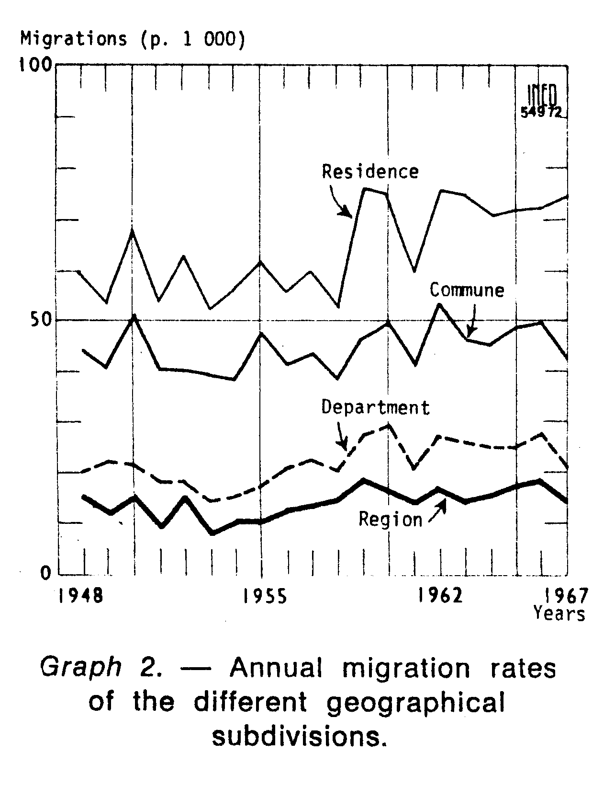
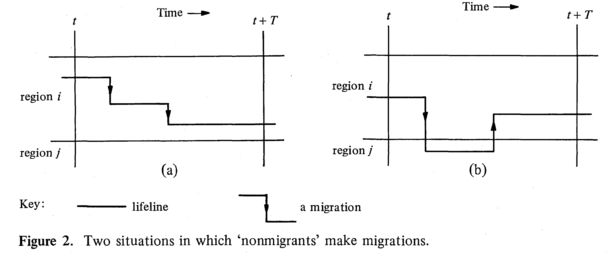
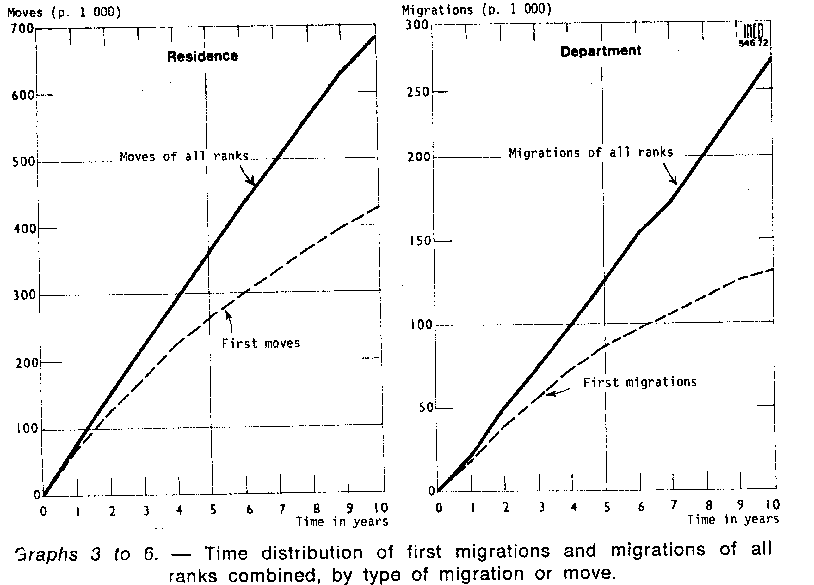
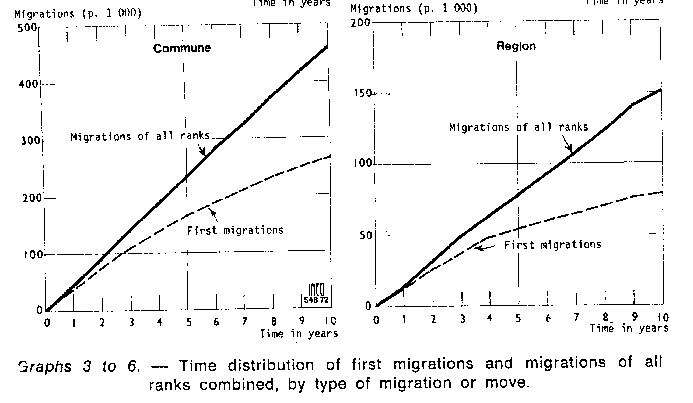
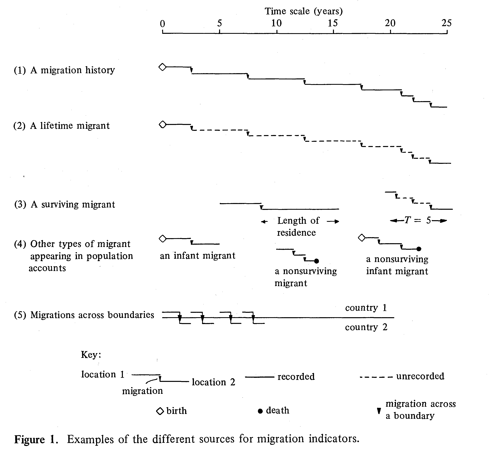
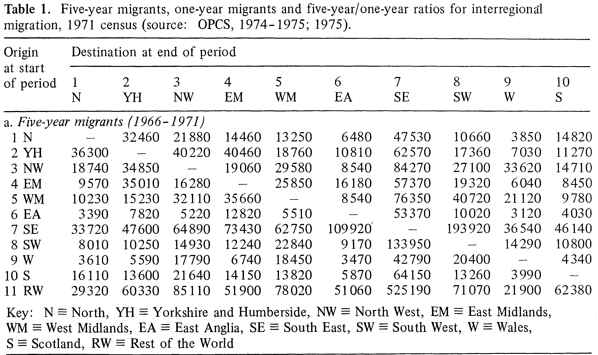
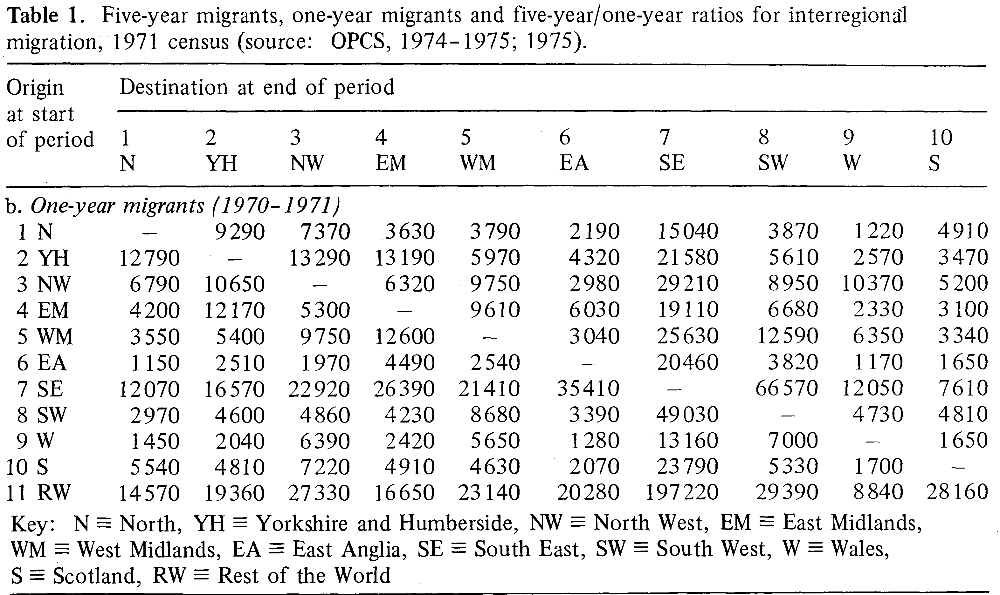
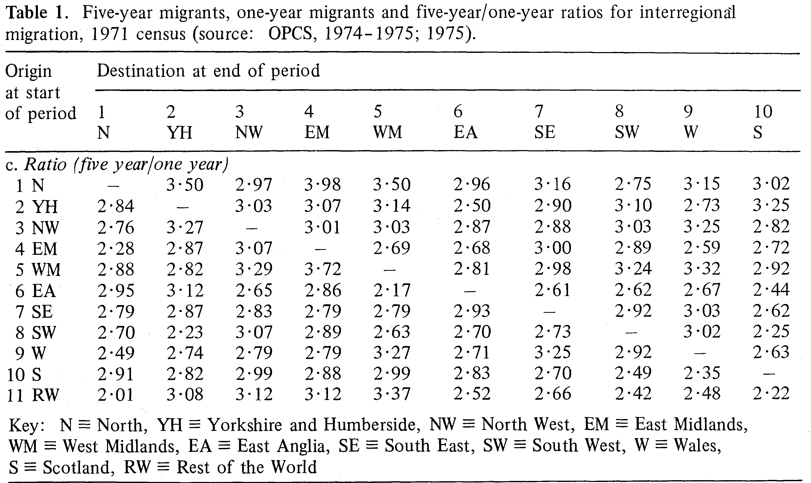

Chapter 3 Migration Concepts
- Migration involves a change in place of abode, or place of “usual” residence-a taking-up of life in a new or different place - United Nations Department of Economic and Social Affairs Population Division (1983)
- Could apply to a range of demographic units, such as a person, a family or a household
- Tend to excludes nomads, movement of population groups with no fixed place of residence, seasonal movements of persons who live in two or more places during the course of a year.
- Both a spatial (place) and temporal (change) dimension are required in the definition of migration
3.1 Spatial
3.1.1 Place of Residence
The Principles and Recommendations for Population and Housing Censuses (UN Statistics Division 2008: 102, para. 1.463) defines usual residence as follows:
“It is recommended that countries apply a threshold of 12 months when considering place of usual residence according to one of the following two criteria:
The place at which the person has lived continuously for most of the last 12 months (that is, for at least six months and one day), not including temporary absences for holidays or work assignments, or intends to live for at least six months
The place at which the person has lived continuously for at least the last 12 months, not including temporary absences for holidays or work assignments, or intends to live for at least 12 months.”
3.1.2 Place of Residence
- Typically no restriction is placed on the distance involved in a relocation - see Lee (1966).
- Could include move from one apartment to another in the same building, or it may be a move to another country.
- In the past, some researchers have drawn a distinction between moves between local communities (cities, labour markets) and moves within local communities
- Labelled as ‘migration’ and ‘local mobility.’
- Many have argued that this distinction is problematic and no spatial constraints on the definition of migration should be used.
3.1.3 Place of Residence
- If address information on points of origin and points of destination, the tabulation of moves by distance covered could be obtained.
- Usually, not possible in countries without population registers
- Time consuming and of little policy relevance
- Census or survey results are necessarily tabulated for the administrative or political units into which the country is divided.
- A migration is then operationally defined as a change of residence from one civil division to another, and the volume of migration is to a considerable degree a function of the size of areas chosen for compilation.
3.1.4 Courgeau (1979)

3.1.5 Place of Origin
- Typologies of migration data can be stratified by differing places of origin. Most commonly used:
| Origin | Data Type |
|---|---|
| Previous place of residence | Migration event (movement) data |
| Place of residence \(n\) years ago | Migrant transition data |
- Lifetime migration data could be considered as a form of transition data where \(n\) changes based on the age of each individual
- Migrant stock data are an aggregation over all persons lifetime migration flow.
- Given at specific point of time without an interval.
- Migration data literature often distinguishes between stock and flow data.
- Other types of migration data occasionally collected are
- Duration at residence (combined with place of previous residence can derive a migration transitions)
- Number of moves over a given interval (event data)
- Country of citizenship (sometimes used as a proxy for place of birth)
3.1.6 Migrant Transition Data
- Migrant transition data are typical collected in national censuses which identify migrants by comparing their place of usual residence at the time of enumeration (\(t\)) with that at a specified earlier date (\(t-n\)).
- Time period is usually either 1 year (e.g. UK) or 5 years (e.g. USA)
- Some countries have time periods as the interval between current and last census or significant time point in countries history.
- Transition data fail to identify multiple and return moves, and migrants who are born or who die during the measurement period.
3.1.7 Migrant Transition Data - Rees 1970

3.1.8 Migrants and Migration
- Transition data are counts of migrants
- A migrant is a person who has in some specified period in the past experienced one or more migrations.
- Persons who moved during the interval and died before its end should, strictly speaking, be counted as migrants and their moves should be counted as migrations.
- Likely to be excluded as information on migrants is usually obtained after the end of the interval and with reference to persons still living at that time.
3.1.9 Migration Event Data
- Event data record every move that is made by each individual
- Include multiple and return migrations as well as moves by the newborn and those immediately before death.
- Typically collected in population registers
- Represent a more complete record of migration over time
- Geographical units for which the data are available are generally coarser and registers often fail to capture information on within-region moves.
- Less information about characteristics of migrants is usually available
- Some groups may be omitted from altogether (e.g. prisoners, military personnel)
3.1.10 Migration Event Data
- There are important distinctions between the play (migration) and the actor (migrant).
- For a given migration interval, the number of migrants is rarely, if ever, as large as the number of migrations.
- Unless the interval is very short (a day, or perhaps a week) some persons are certain to move more than once.
- The longer the migration interval the more the count of migrants will understate the amount of migration.
- Conversely, the shorter the migration interval, the count of migrants will approach the number of migrations.
- Shown by Courgeau (1979) …
3.1.11 Migration Event Data - Courgeau (1979)

3.1.12 Migration Event Data

3.2 Temporal
3.2.1 Migration Interval
- Migration occurs continuously over time. In order to study its incidence, data have to be compiled with reference to specified periods of time.
- The interval can be
- Definite, e.g., one year, five years, ten years, the intercensal period
- Indefinite, e.g., the lifetime of the population alive at a given date.
- Definite interval data typically called fixed-term or period migration (or surviving migrants in the example on the next slide)
- Lifetime migration or data based on place of last residence lack a definite time reference.
3.2.2 Migration Interval - Rees (1977)

3.2.3 One-Year Five-Year Problem
- Migration data is commonly collected over a one or five year interval.
- In places where both intervals are used, the number of migrants recorded over a five-year interval is far less than five times the number recorded over a one-year interval
- Seen in Courgeau (1979) plots or Rees(1970) tables - see next slides
- Rogerson (1990) no straightforward algebraic solution to comparing one-year and five-year migration probabilities.
- Event data has similar patterns to transition data for the same period, however
- Width of the interval influences the intensity of migration and also the geographic pattern of captured migration flows.
3.2.4 One-Year Five-Year Problem - Rees 1970

3.2.5 One-Year Five-Year Problem - Rees 1970

3.2.6 One-Year Five-Year Problem - Rees 1970

3.3 Measures
3.3.1 Migration measures
- There are a range of migration measures over differing levels of details
- Region to region
- Region totals
- System totals (or index measures)
- Measure might have multiple interchangeable names for the same terms.
3.3.2 Region to region measures
- Streams or bilateral flow or origin-destination flow is the total number of moves made during a given migration interval that have a common area of origin and a common area of destination.
- Data on migrations, or migrants, can be cross-classified by area of origin and area of destination.
- Forms matrix of \(n \times (n-1)\) streams, from area \(i\) to area \(j\) usually written as \(m_{ij}\)
- Contains a set of \(\frac{n(n -1)}{2}\) pairs of streams, each pair representing movements in opposite directions (\(m_{ij}\) and \(m_{ji}\))
3.3.3 Region to region measures
- For a pair of streams that are of unequal size there exists a dominant streams and counter-stream or reverse stream
- Sum of the two members of a pair of streams is called gross interchange
- Differences between streams and counter-streams for individual pairs of streams, the balances are net streams.
3.3.4 Region totals
Every move is an out-migration (emigration) with respect to the area of origin and an in-migration (immigration) with respect to the area of destination.
Places of origin and destination dictate how describe migrants and migration
| Scale | Area | Event Term | Migrant Term |
|---|---|---|---|
| Internal | Origin | out-migration | out-migrant |
| Destination | in-migration | in-migrant | |
| International | Origin | emigration | emigrant |
| Destination | immigration | immigrant |
3.3.5 Region totals
- Typically in- or out-migration are evaluated for each region
- Data collected or aggregated without reference to place of origin for in-migration totals, or destination for out-migration totals
- Beyond gross migration totals for each region other measures, other summary measures can also be derived
| Term | Definition |
|---|---|
| Gross migration | All moves or all migrants |
| Turnover | Sum of in-migration and out-migration, or of in-migrants and out-migrants. |
| Net migration | Balance of movements in opposing directions from difference between in-migration and out-migration for a specific area |
3.3.6 Region totals
3.3.7 Rate measures
- Out-migration or emigration rates calculated by dividing events in a period by exposure population: \[ e^{[t, t +1]} = \frac{E^{[t, t +1]}}{P}k \] where \(e^{[t, t +1]}\) is the out or emigration rate, \(E\) is the number of out-migrants or emigrants during the period, \(P\) is the population exposed to the likelihood of migration during the period and \(k\) is a constant, usually 1000.
- Exposure population is typically either the
- Population at the mid-interval, under the assumption that migration is uniformly distributed across the interval.
- Population at the start or end of the interval under the assumption that migration has a negligible effect on population change.
- Can be decomposed by a subset of the population such age and/or sex
\[ e^{[t, t +1]}_{i} = \frac{E_{i}^{[t, t +1]}}{P_{i}}k \]
3.3.8 Rates
In-migration or immigration, the population exposed to the risk of migrating into a region is the entire population of the world living elsewhere.
However, rates calculated by dividing events by the exposure time of the current residents (the population group not exposed to risk). \[ i^{[t, t +1]} = \frac{I^{[t, t +1]}}{P}k \]
Net migration rates, like in-migration rates, are calculated by dividing events by the exposure time of the current residents (the population group not exposed to risk). \[ m^{[t, t +1]} = \frac{M^{[t, t +1]}}{P}k \]
3.3.9 Rates
- In-migration and net migration rates are unlike other demographic rates.
- Not using the true population at risk in the denominator
- However, using the resident population satisfies the needs of the demographic balancing equation, since rates of gain and loss are measured relative to the same population. \[ \begin{aligned} P^{t+1} &= P^{t} + B^{[t, t +1]} - D^{[t, t +1]} + M^{[t, t +1]} \\ P^{t+1} &= P^{t} \left(1 + b^{[t, t +1]} - d^{[t, t +1]} + m^{[t, t +1]} \right)\\ &= P^{t} \left(1 + b^{[t, t +1]} - d^{[t, t +1]} + i^{[t, t +1]} - e^{[t, t +1]} \right) \end{aligned} \] where we can substitute net migration \(M^{[t, t +1]}\) with difference of in- and out-migration over the period (\(I^{[t, t +1]} - O^{[t, t +1]}\)) \[ \begin{aligned} P^{t+1}&= P^{t} + B^{[t, t +1]} - D^{[t, t +1]} + I^{[t, t +1]} - O^{[t, t +1]} \\ &= P^{t} \left(1 + b^{[t, t +1]} - d^{[t, t +1]} + i^{[t, t +1]} - o^{[t, t +1]} \right) \end{aligned} \]